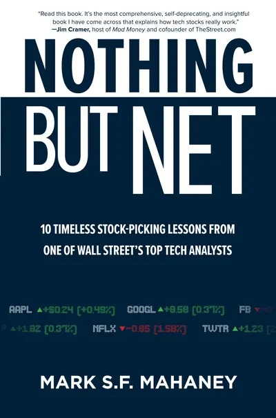

马克·S. F. 马哈尼（Mark S. F. Mahaney）从1998年开始在华尔街覆盖互联网股票，先后任职摩根士丹利、American Technology Research、花旗、RBC Capital Markets与Evercore ISI。他写《Nothing But Net》时已连续15年被《机构投资者》列为顶尖互联网分析师，其中五年排名第一；《金融时报》和StarMine也曾把他列为第一名盈利预测与选股分析师。McGraw Hill于2021年10月出版这本书，版权页标为2022年。书名借篮球的"空心入网"比喻精准选股，但开篇没有营造百发百中的神话：按20年、每年约200个交易日、覆盖约30只股票粗算，马哈尼每天都有机会重新判断，累计可能面对12万次决策；专业工作的关键不是频繁改口，而是知道什么事实足以推翻原判断。
十课先处理亏损，再处理增长。前两课承认坏公司会亏钱，好公司也会经历20%—40%的回撤；第三课"Don’t Play Quarters"反对围绕季报交易——2015至2018年亚马逊上涨386%，16个季度中有4次业绩后单日涨逾10%，也有4次单日跌逾5%，试图每次猜对方向很容易错过长期趋势。第四课给出"20%营收增长规则"：先找连续五六个季度收入增长超过20%的公司；能持续达到这一速度的企业约占标普500成分股的2%，但增长率若在三四个季度内减半就要重新审视。作者也明确补上限制：没有利润前景的增长长期不创造价值。
其余六课解释增长从何而来。产品创新可以创造新收入流——亚马逊的云计算，也可以替换旧收入流——Netflix从DVD转向流媒体；可触达市场（TAM）要足够大，个位数市占率配合大市场才留下长期空间；价值主张应优先服务客户，亚马逊Prime牺牲短期利润换取忠诚度，而eBay和Grubhub为守住利润率减弱创新。管理层检查项包括创始人领导、长期目标、技术背景、产品节奏和承认错误的能力。估值只需先问是否"大致合理"：有盈利的高增长公司可把市盈率与预期每股收益增速比较，无盈利公司则检查同类模式、已盈利业务分部、规模效应及管理层可采取的盈利措施。最后一课寻找DHQ——被错杀的高质量股票：企业仍保持大市场、产品创新、客户价值和好管理层，却因20%—30%的回调或估值低于增速而出现机会；卖出信号是营收增速实质恶化，而不是股价单独下跌。
英文封底收录了可核验的同行评价。CNBC《Mad Money》主持人吉姆·克雷默写道："I thought I knew these stocks cold; I learned a ton. You will too."方舟投资创办人凯茜·伍德则说，本书的经验"I have not forgotten and, thanks to his analysis, will never forget."天下文化于2022年出版吕佩忆译本，正式书名为《精準選股：華爾街傳奇科技分析師的10堂投資課》。这套框架的实用处在于把"看好科技"改写为一串可监测的经营指标，但20%并非跨行业定律，TAM估算也常被管理层夸大；亚马逊、Google、Facebook和Netflix等成功样本还带有幸存者偏差。读者可以用十课建立观察表，却仍需单独检查股权稀释、资本强度、监管、竞争与估值基准，并把作者在Blue Apron、Zulily、Groupon等失败判断中的教训与赢家案例放在同一张表上。